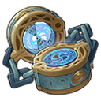

추천 광추
바람에 흩날리는 거짓말
속도 +18% · 공격 시 방깎
효과 자세히
망연 방어력 −16% · 전투 속도 170에서 도난 −8% 추가. 기본 확률 120%, 2턴. 상태별 최근 부여 효과 적용.
필요한 건 기다림뿐
공격당 속도 +4.8% · 감전 추가
효과 자세히
피해 +24%. 속도 3스택까지. 적중 → 기본 확률 100%, 공격력 60% 감전 1턴.
밤 인사와 잠든 얼굴
디버프당 본인 피해 +24%
효과 자세히
대상 디버프 최대 3개 → +72%. 지속 피해에 적용.
사냥감의 시선
효과 명중 +40% · 지속 피해 +48%
효과 자세히
효과 명중 목표와 본인 지속 피해를 함께 보강.
땀방울처럼 빛나는 결심
공격 시 함락 · 방어력 −16%
효과 자세히
함락 없는 적에게 기본 확률 100%, 1턴.
추천 유물
깊은 감옥에 수감된 죄수 4 · 즐거움에 취한 바다의 일각 2
- 머리
 주옵션HP부옵션효과 명중 · 속도 · 공격력%
주옵션HP부옵션효과 명중 · 속도 · 공격력% - 손

주옵션공격력부옵션효과 명중 · 속도 · 공격력% - 몸통
 주옵션효과 명중 / 공격력%부옵션효과 명중 (주옵션 제외) · 속도 · 공격력% (주옵션 제외)
주옵션효과 명중 / 공격력%부옵션효과 명중 (주옵션 제외) · 속도 · 공격력% (주옵션 제외) - 다리
 주옵션속도부옵션효과 명중 · 공격력%
주옵션속도부옵션효과 명중 · 공격력% - 구체
 주옵션물리 속성 피해 / 공격력%부옵션효과 명중 · 속도 · 공격력% (주옵션 제외)
주옵션물리 속성 피해 / 공격력%부옵션효과 명중 · 속도 · 공격력% (주옵션 제외) - 매듭
 주옵션공격력%부옵션효과 명중 · 속도
주옵션공격력%부옵션효과 명중 · 속도
이 조합을 추천하는 이유
죄수 지속 피해당 방어력 무시 6%, 최대 18%. 바다의 일각 전투 공격력 2400/3600 → 지속 피해 +12%/+24%.
유성을 쫓는 괴도 4 · 도적국 탈리아 2
- 머리
 주옵션HP부옵션속도 · 효과 명중 · 격파 특수효과 · 공격력%
주옵션HP부옵션속도 · 효과 명중 · 격파 특수효과 · 공격력% - 손
 주옵션공격력부옵션속도 · 효과 명중 · 격파 특수효과 · 공격력%
주옵션공격력부옵션속도 · 효과 명중 · 격파 특수효과 · 공격력% - 몸통
 주옵션효과 명중 / HP%부옵션속도 · 효과 명중 (주옵션 제외) · 격파 특수효과 · 공격력%
주옵션효과 명중 / HP%부옵션속도 · 효과 명중 (주옵션 제외) · 격파 특수효과 · 공격력% - 다리
 주옵션속도부옵션효과 명중 · 격파 특수효과 · 공격력%
주옵션속도부옵션효과 명중 · 격파 특수효과 · 공격력% - 구체
 주옵션HP% / 공격력%부옵션속도 · 효과 명중 · 격파 특수효과 · 공격력% (주옵션 제외)
주옵션HP% / 공격력%부옵션속도 · 효과 명중 · 격파 특수효과 · 공격력% (주옵션 제외) - 매듭
 주옵션격파 특수효과부옵션속도 · 효과 명중 · 공격력%
주옵션격파 특수효과부옵션속도 · 효과 명중 · 공격력%
이 조합을 추천하는 이유
괴도 격특 +32% · 직접 격파 후 에너지 +3pt. 탈리아 전투 속도 145 → 격특 합계 +36%.
이 정도면 잘 키웠다
동일 파티·광추 기준 · 조건 [*]
| 스탯 | 추천 스탯 | 준종결 | 종결 |
|---|---|---|---|
| 효과 명중 [*] 열상 기본 확률 100%. 강화 카프카의 공격력 버프는 효과 명중 75%. | 67% | 카프카 동행 75% | 75% 유지 · 적 저항 확인 |
| 속도 [*] 탈리아는 전투 145 이상. 필살기 취약이 기폭보다 먼저. | 134 | 143 | 160 선택 |
| 격파 특수효과 [*] 직접 물리 격파할 수 있는 적 대상 편성 목표. | 격파형 매듭 확보 | 격파형 100% 부근 | 격파형 120%+ |
육성 단계의 기준
캐릭터·광추 Lv.80 · 5성 유물 +15. 발동 조건은 명시한 수치, 그 외는 육성 목표.
성혼과 추천 돌파
2돌 물리 약점 적에 투지 추가 · 6돌 강화 일반 공격 열상 기폭 증가.
1열상 대상에 본인 피해 +15%
루카 행동 시 열상 적 조건, 2턴.
2스킬이 물리 약점 적 적중 → 투지 +1추천
약한 적, 강한 나
3전투 스킬·특성 +2
스킬·특성 레벨 상한 각각 15.
4투지 획득 시 공격력 +5%
최대 4스택 +20%.
5필살기 +2 · 일반 공격 +1
필살기·일반 공격 레벨 상한 각각 15·10.
6강화 일반 공격 열상 기폭 증가추천
어퍼컷 적중 시 앞선 돌격 펀치 타격당 열상 피해 8% 즉시 정산.
추천 파티


기본 운영과 행적
열상과 투지를 함께 준비
전투 스킬로 열상 → 투지 2스택 확보 → 강화 일반 공격으로 열상 기폭.
- 필살기 취약을 치기 직전에 적용. 물리 약점이 있으면 2돌 스킬 투지 수급 활용.
행적 육성 순서
전투 스킬 → 특성 → 필살기 → 일반 공격
아하 속도 계산기 →기준과 출처 · 2026-11-25
4.7 데이터 · Prydwen 장비 참고 · 자료실 편성 예시